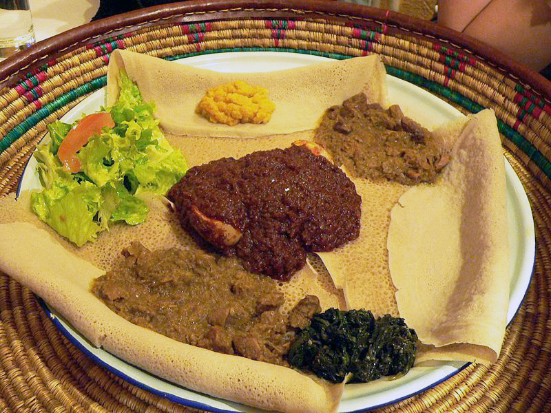

Injera
Ethiopia
Ingredients
- ¾ cup teff flour (found in health food shops)
- 3½ cups water
- pinch of salt
Directions
- Standing time 2 days
- Mix teff with the water. Leave to stand in a covered bowl for a couple of days until it starts to bubble.
- The mixture should be slightly sour and the consistency of crêpe batter. Stir in the salt.
- Add a ladle of the mixture to a pre-heated skillet and cook slowly until air bubbles rise to the top.
- Do not let it brown, and make sure that it is not too thick.
